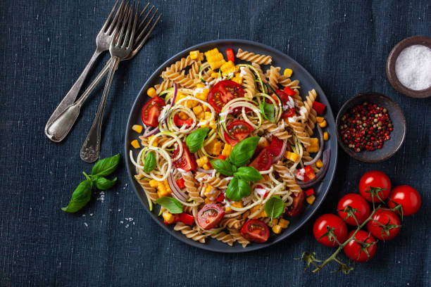

Vegetarian Pasta Salad
Ingredients:
- 8 oz (225g) pasta
- 1 cup cherry tomatoes, halved

- 1 cucumber, diced
- 1/2 red onion, thinly sliced
- 1/2 cup black olives, sliced
- 1/4 cup feta cheese, crumbled
- 2 tablespoons olive oil
- 2 tablespoons balsamic vinegar
- Salt and pepper to taste
Instructions:
-
Cook the pasta according to package instructions. Drain and let it
cool.
-
In a large bowl, combine the cooked pasta, cherry tomatoes, cucumber,
red onion, olives, and feta cheese.
-
In a small bowl, whisk together the olive oil, balsamic vinegar, salt,
and pepper.
- Pour the dressing over the pasta salad and toss to combine.
- Refrigerate for at least 1 hour before serving.